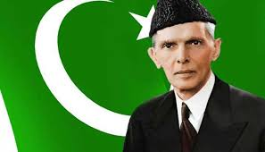
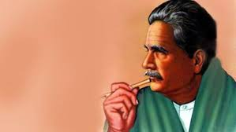
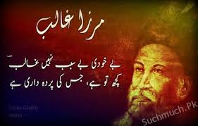

Muhammad Ali Jinnah (born Mahomedali
Jinnahbhai; 25 December 1876 – 11 September
1948) was a barrister, politician and the f
ounder of Pakistan.[2] Jinnah served as the
leader of the All-India Muslim League from 1913 until Pakistan's creation on 14 August 1947, and then as Pakistan's first Governor-General until his death. He is revered in Pakistan as Quaid-i-Azam ("Great Leader") and Baba-i-Qaum, ("Father of the Nation"). His birthday is considered a national holiday in Pakistan.[3][4]
Born at Wazir Mansion in
Karachi, Jinnah was trained as a barrister at
Lincoln's Inn in London. Upon his return to
British India, he enrolled at the Bombay High Court, and took an interest in national politics, which eventually replaced his legal practice. Jinnah rose to prominence in the Indian National Congress in the first two decades of the 20th century. In these early years of his political career, Jinnah advocated Hindu–Muslim unity, helping to shape the 1916 Lucknow Pact between the Congress and the All-India Muslim League, in which Jinnah had also become prominent. Jinnah became a key leader in the All India Home Rule League, and proposed a fourteen-point constitutional reform plan to safeguard the political rights of Muslims. In 1920, however, Jinnah resigned from the Congress when it agreed to follow a campaign of
satyagraha, which he regarded as political
anarchy.
Allama iqbal
 Sir Allama Muhammad Iqbal
(/ˈɪkbɑːl/; Urdu: محمد اِقبال; 9 November
1877 – 21 April 1938), known as Allama Iq
bal, was a poet, philosopher, theorist, and barrister
in Pakistan. He has been called the "Spiritual Father
of Pakistan" for his contributions to the nation.
Iqbal's poems, political contributions, and academic
and scholarly research were distinguished.[1][2] He
inspired the Pakistan movement in British India[3][4]
and is considered a renowned figure of Urdu literature
,[5] although he wrote in both Urdu and Persian.[2][5]
Iqbal is admired as a prominent poet
by Indians, Pakistanis, Iranians, Banglade
mirza galib
galib

Mirza Ghalib" redirects here. For other pages with similar titles, see Mirza Ghalib (disambiguation). For other people, see Ghalib (name).
Dabir-ul-Mulk
Najam-ud-Daula
Nizam-e-Jung
Mirza Asadullah Khan Ghalib
Mirza Ghalib photograph 3.jpg
Native name
مِرزا اسَدُاللہ بیگ خان
Born Mirza Asadullah Baig Khan
27 December 1797
Daryaganj, Akbarabad (Present day:
Agra, Uttar
Pradesh, India)
Died 15 February 1869 (aged 71)
Gali Qasim Jaan, Ballimaran,
Chandni Chowk, Delhi, British India
(Present
day: Ghalib ki Haveli, Delhi, India)
Pen
name Ghalib, Asad
Occupation Poet
Period Mughal era, British Raj
Genre Ghazal, Qasida, Ruba'i, Qit'a, Marsiya
Subject Love, Philosophy, Mysticism
Parents
Mirza Abdullah Baig Khan (father)
Izzat-un-Nisa Begum (mother)
Ghalib (Urdu: غاؔلِب), born Mirz
a Asadullah Baig Khan (Urdu: مِرزا اسَدُاللہ بیگ خان),
(27 December 1797 – 15 February 1869)
,[1] was a prominent[2] Urdu and Persian
poet during the last years of the Mughal Empire. He used his pen-names of Ghalib (Urdu: غالِب, ġhālib means "dominant") and Asad (Urdu: اسَد, Asad means "lion"). His honorific was Dabir-ul-Mulk, Najm-ud-Daula. During his lifetime, the already declining Mughal empire was e
clipsed and displaced by the Colonial B
ritish Rgo to top